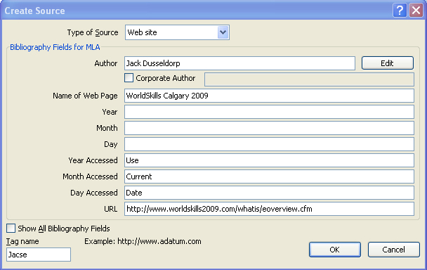

Training Room 4: Reports
Time to Practise
Practice 1
In this Practice you will transform a basic report into a complete, professional-looking document. Practise the software features you learned in this training room to apply styles, format the document, add references and support pages, and properly number the pages of the report. You may refer to the training room and sample reports for help.
Step 1: Open the file Report.
Step 2: Activate the Reveal Formatting task pane to help you format the report.
Step 3: Format the titles, headings, and subheadings using Quick Styles or Outlining.
Step 4: Use the Find feature to find the fourth occurrence of WorldSkills. This is the start of a long quotation.
Step 5: Single-space and indent the long quotation (.5" left and right). Remove the quotation marks.
Step 6: In the References Tab, Citations & Bibliography group, choose MLA Style formatting. Click the Insert Citation button, and Add New Source to create a reference at the end of the long quotation. Use the information in the Create Source window below:

Microsoft product screen shot(s) reprinted with permission from Microsoft Corporation.
Step 7: Use the Find feature to find the word SAIT on the second page of the report.
Step 8: Insert a footnote after the word Sait and type “Southern Alberta Institute of Technology” in the footnote.
Step 9: Insert a Works Cited page. Format as necessary. Here is a summary of references, unformatted, included in the report:
Alberta Education
Alberta Education
November 7, 2008<http://www.education.alberta.ca/department/news/events/worldskills2009.aspx>
Jack Dusseldorp
WorldSkills 2009
January 31, 2009 <<http://www.worldskills2009.com/whatis/eoverview.cfm>>
WorldSkills
WorldSkills 2009
November 7, 2008
<http://www.worldskillls2009.com/schedule/skillcategories>
Step 10: Insert an Index. Mark five entries of your choice, position your cursor at the end of the document, and Insert an Index Page.
Step 11: On the index page, type the title INDEX and make it a Heading 1 style so it appears in the TOC.
Step 12: Insert a Cover Page (title page) of your choice, and fill in the appropriate information.
Step 13: Insert a Table of Contents page after the title page (remember to use a Next Page section break on this page).
Step 14: Add page numbers in the footer. Remember, no page numbers on the title page or the first page of the report; use Roman numerals on the TOC, and regular numbers in the rest of the report.
Step 15: Save your document as “Report” in your INF2050: WP 2: Reports folder.
Ready?
Take time to assess your skills and understanding of the concepts presented in this training room.
- What are the benefits of using styles in a document?
- What kinds of references can you include easily using Word?
- How do a TOC and an index help your audience?
- How are bookmarks or hyperlinks helpful in a document?
Check your report against Report Exemplar.
Does your report look similar to the example?
Could you make any improvements to the basic style that would make it more professional or more visually appealing? Make the changes and save the final copy in your Reports folder.
Check Point
Use the Software Skills Checklist and check off those skills you are confident in demonstrating.
If you had difficulty with the learning concepts or software features, go back and review the information as you will use these skills in the next training sessions and in the final project. Be sure to speak to your teacher if you need help.
Going Beyond
To learn more about researching, writing, and style guides to format reports, use the Internet to visit the online Writing Lab at Purdue University.